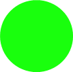

 Eğer daire yeşil ise sol ok tuşuna basın. |
Eğer daire kırmızı ise sağ ok tuşuna basın. |
Bu görev, ilgili bilgilere odaklanma ve ilgisiz bilgileri görmezden gelme becerisini ölçer.
Sol veya sağ tuşa basarak dairenin yeşil mi kırmızı mı
olduğuna karar vermelisiniz. Görevdeki zorluk,
dairenin renginden bağımsız olarak ekranın sol veya sağ yarısında
gösterilmesinden kaynaklanmaktadır.
Bu nedenle, dairenin konumu her zaman doğru cevap tuşunun konumuna
(yani sol veya sağ) karşılık gelmeyecektir.
 Eğer daire yeşil ise sol ok tuşuna basın. |
Eğer daire kırmızı ise sağ ok tuşuna basın. |
Lütfen mümkün olduğunca doğru ve hızlı bir şekilde cevap vermeye çalışın.
Bir sonraki sayfaya geçmek için lütfen
sağ ok tuşuna basın.